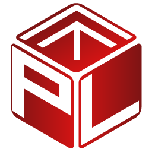
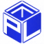
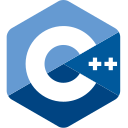

Antwerpen, België NL · EN · FR
Full-stack Test Automation C# & PL/SQL Development
Julie
Toussaint
Vijf jaar aan het warehouse- en cateringlogistieksysteem van Deutsche Bahn: end-to-end tests, de C#/.NET-code van het framework eronder, en testdata en businesslogica-checks in Oracle SQL en PL/SQL.
- Ervaring
- 5 jaar als Test Automation Engineer
- Stack
 C# / .NET
C# / .NET Oracle SQL · PL/SQLRanorex
Oracle SQL · PL/SQLRanorex- Project

PROLOG voor Deutsche Bahn- Open voor
- Test Automation & QA · C# & PL/SQL Development
- Goederenontvangst boeken DESKTOP
- Voorraadtelling afsluiten DESKTOP
- Orderpicking met handheld-scan HANDHELD
- Voorraad controleren in de database ORACLE
- Businesslogica testen zonder UI PL/SQL
Geslaagd 5/5
Profiel
Over mij
Test Automation Engineer met een bachelor Toegepaste Informatica en vijf jaar ervaring als voornaamste test automation engineer van PROLOG bij B. Rekencentra: het logistieke systeem achter de catering op de langeafstandstreinen van Deutsche Bahn.
Mijn werk zit op het snijvlak van testen en ontwikkelen: ik automatiseer end-to-end tests, schrijf de C#-bibliotheken die het hele team gebruikt en werk rechtstreeks in de Oracle-database. Ik zoek een rol in testautomatisatie en QA, of als C#- en PL/SQL-developer, in een team dat kwaliteit serieus neemt.
Twee profielen
-
Full-stack Test Automation QA
Testen over alle lagen heen: Windows-desktop, Android-handheld en de Oracle-database, van testontwerp tot nachtelijke run.
- Hoofdbijdrager aan een Ranorex-framework van 33 testsuites en ±1.200 testcases
- Eigenaar van de nachtelijke testruns, de testserver en de teststrategie
- Databanktests die businesslogica los van de UI controleren, met controle op false positives
- Testscenario's ontworpen, verkennend getest en testwerk gereviewd volgens de Definition of Done
Ranorex · Android · Oracle · dotCover · Jira · Scrum
-
Full-stack Development C# · PL/SQL
Code van de gebruikersinterface tot in de database: C#/.NET in de applicatie en het framework, PL/SQL in Oracle.
- Gedeelde C#-bibliotheken gebouwd: Oracle-datalaag, UI-actiebibliotheek, rapportering en een hang-watcher
- In de WinForms/Telerik-applicatie zelf: accessible controls, refactoring en een bugfix via merge requests
- Het gedeelde PL/SQL-testdatapakket opgezet (2022) en onderhouden: aanmaak en volledige opkuis van testdata
- Grote refactors en upgrades (C# 7, Oracle Managed Data Access) zonder de nachtelijke runs te breken, en oorzaakanalyse van foreign-key- en lockfouten
C# · .NET Framework · WinForms · Oracle 19c · PL/SQL · Git
Hoe ik werk
- Groen is pas groen met bewijs Een geslaagde test vertrouw ik pas als een query bevestigt dat hij echt iets heeft getest.
- Oorzaken, geen workarounds Bij een falende test zoek ik in logs, tracetabellen en jobhistoriek waar het echt misloopt.
- Eigenaarschap Vijf jaar verantwoordelijk voor de nachtelijke testruns, de testserver en de teststrategie.
Rol
Verantwoordelijkheden
Wat in een PROLOG-team van maximaal vijf mensen onder mijn verantwoordelijkheid viel, van ticket tot nachtelijke run. De prioriteiten legde de teamlead vast, met mijn input.
-
Analyse & testontwerp
Per ticket de specificaties, de applicatie, de code en de database uitgezocht, en afgerond met een schatting en een voorstel van testscenario's. Ook user stories geschreven en complexe businessregels gedocumenteerd voor de product owners.
-
C#-framework & tests
De end-to-end tests voor desktop en Android-handheld, en de C#-code eronder: gedeelde bibliotheken, de Oracle-datalaag, rapportering en codecoverage. Kleine testbaarheidsfixes in de applicatie zelf via merge requests.
-
SQL & PL/SQL
Het gedeelde PL/SQL-pakket waarmee alle suites hun testdata aanmaken en weer opkuisen, testsuites die businesslogica rechtstreeks in de database controleren, en de analyse van ORA-, foreign-key- en lockfouten.
-
Nachtelijke runs
De onbemande testrun van 6 tot 8 uur per nacht: volgorde, Ranorex-agents, release-builds en de testserver. De volgende werkdag elke fout geanalyseerd: applicatiebug, testbug, testdata of omgeving.
-
Teststrategie
De teststrategie op Confluence geschreven en vijf jaar bijgehouden. Testwerk van collega's gereviewd volgens de Definition of Done, met een concrete oplossing bij elke bevinding.
Loopbaan
Ervaring
-
dec 2021 – heden 5 jaar
Test Automation Engineer
B. Rekencentra N.V.
In het PROLOG-team, naast de developers, verantwoordelijk voor de testautomatisatie van het warehouse- en logistieksysteem achter de catering op de langeafstandstreinen van Deutsche Bahn (DB Fernverkehr). Ik nam een bestaand Ranorex-framework over en werd de voornaamste test automation engineer: het eerste halfjaar als enige, daarna met collega's die naast hun andere werk mee tests schreven.
- Het grootste deel van een Ranorex/C#-framework van 33 testsuites en ±1.200 testcases ontworpen en gebouwd, op de basis van eerdere engineers, inclusief de gedeelde bibliotheken en conventies.
- De gedeelde C#-basis geschreven: een Oracle-datalaag (connecties, transacties, procedures, cursors), een gemeenschappelijke UI-actiebibliotheek, een app-launcher en geautomatiseerde rapportering (pdf, csv-samenvattingen, publicatie).
- Het gedeelde testdatapakket in Oracle PL/SQL gebouwd en onderhouden waarmee de suites testdata aanmaken en opkuisen, en daarmee businesslogica zoals bestelvoorstellen los van de UI getest. Een groene test telde pas na verificatie met SQL.
- End-to-end tests geautomatiseerd voor de Windows-desktopapplicatie en de Android-handheldapp Prokomm, over goederenontvangst, orderpicken, inventaris, transport en het beladen van cateringtrolleys.
- De testsolution onderhoudbaar gehouden: een aparte datalaag, herbruikbare modulegroepen en opgesplitste suites, telkens in kleine, reviewbare stappen zonder de nachtelijke runs te breken.
- Complexe domeinfunctionaliteit, zoals schadecodes op restauratierijtuigen, uitgezocht in UI, documentatie en code, gedocumenteerd voor de product owners en gedemonstreerd aan de teamlead.
- Dagelijks AI-ondersteund gewerkt (Claude Code) voor oorzaakanalyse, code en documentatie, met kritische controle en correctie van het resultaat.
Kerncijfers
- 33testsuitesin het Ranorex-framework
- ±1.200testcasesverdeeld over die testsuites
- 6–8 uper nachtonbemande testrun, de volgende werkdag opgevolgd
- 3lagenWindows-desktop, Android-handheld en Oracle-database
Uitgelicht
-
Zelfherstellende nachtelijke runs
- Probleem
- Liep de desktopapplicatie vast, dan ging een hele nacht testresultaten verloren.
- Aanpak
- Een watchdog en hang-watcher in C# die het proces bewaakt, de applicatie herstart en de testsequentie laat verdergaan.
- Resultaat
- Een bevroren applicatie stopt de nachtelijke run niet meer.
-
Groen is geen bewijs
- Probleem
- Een nieuwe databanktest voor bestelvoorstellen slaagde plots.
- Aanpak
- Met een query vastgesteld dat de setup geen enkel artikel had gewijzigd; de testdata herontworpen en een LIKE vervangen door een exacte match.
- Resultaat
- Tests die alleen slagen als de businesslogica echt klopt.
-
Testbaarheid in de applicatie
- Probleem
- Tests braken bij elke UI-wijziging door broze XPaths, en sommige Telerik-controls toonden niets bruikbaars.
- Aanpak
- Objectherkenning via AccessibleName, en accessibility-ondersteuning in C# toegevoegd aan de controls van de applicatie zelf.
- Resultaat
- Stabielere tests, en testbaarheid werd deel van het product.
-
Codecoverage van UI-testen
- Probleem
- Niemand wist welke applicatiecode de end-to-end tests echt raakten.
- Aanpak
- Een PowerShell-script dat de applicatie tijdens de Ranorex-runs onder JetBrains dotCover draait en de rapporten samenvoegt.
- Resultaat
- Coveragedata voor end-to-end tests, iets wat UI-testopstellingen zelden hebben.
- C# / .NET
- Ranorex
- Oracle PL/SQL
- PROLOG

Prokomm- Jira
- Windows desktop
 Android handheld
Android handheld
-
feb 2021 – mei 2021
Appian Low-Code Developer Stage
RoboRana
Stage in het RoboRana-team dat het verouderde casemanagementplatform van het RIZIV verving door Appian. In het nieuwe systeem gaan dossiers automatisch van de ene afdeling of partner naar de volgende.
- Processen, workflows en gebruikersinterfaces gebouwd op het Appian low-code platform.
- Business process management (BPM) en procesautomatisatie geleerd in een echt project voor een Belgische overheidsinstelling.
- Appian
- Low-code
- BPM
- Workflows
- Casemanagement
Toolkit
Vaardigheden
De eerste vier rijen komen uit vijf jaar professioneel werk; de laatste rij uit mijn opleiding en stage.
Testautomatisatie
- Ranorex
- End-to-end testen
- Functioneel testen
- Data-driven testing
- Testautomatisatie-framework
- Geautomatiseerde rapportering
- Codecoverage (dotCover)
- Testomgeving & nachtelijke runs
- Android-handhelds
C# / .NET
- C# / .NET Framework
- WinForms · Telerik
- Windows-desktopapplicaties
 Visual Studio · MSBuild
Visual Studio · MSBuild Git · GitLab
Git · GitLab- PowerShell
 Python (scripting)
Python (scripting)
SQL & databanken
- Oracle 19c
- SQL
- PL/SQL
- Testdata
- DBeaver
- Redgate for Oracle
Analyse & werkwijze
- Jira
- Confluence
- Requirementsanalyse
- User stories
- Testscenario's
- Code reviews (DoD)
- Scrum
- AI-ondersteund werken
Opleiding & stage
 Java
Java
C++ C
C HTML
HTML CSS
CSS JavaScript
JavaScript- UML
- Softwareanalyse & -ontwerp
- Businessanalyse
 SAP / ERP
SAP / ERP- Appian (low-code)
Talen
- Nederlandsmoedertaal
- Engelsheel goed
- Fransmatig tot goed
Studies
Opleiding
-
sep 2018 – sep 2021
Bachelor Toegepaste Informatica
Erasmus Hogeschool Brussel
- Softwareontwikkeling & IT
- Programmeren met C++, .NET/C# en Java, databanken, webtechnologie, softwareanalyse en -ontwerp, UML, testing en IT-infrastructuur; softwareoplossingen ontwikkelen in praktijkgerichte projecten.
- Business IT
- IT toegepast op bedrijfsprocessen en organisatienoden, met focus op SAP/ERP, businessanalyse, Enterprise Intelligence, mobile apps en IT-integratie.
-
dec 2017 – jun 2018
Bachelor Toegepaste Informatica
Karel de Grote Hogeschool Antwerpen
Basis in programmeren (Java, C), webontwikkeling (HTML, CSS, JavaScript), databanken, netwerken, software engineering, data science en computersystemen.
Lab
Probeer het zelf.
Drie interactieve experimenten, geïnspireerd op mijn werk aan PROLOG voor Deutsche Bahn. Alles draait in je browser.
-
Testrobot
Kijk hoe een geautomatiseerde test een nagebootste Prokomm-handheld bedient voor het orderpicken van een cateringtrolley, en bouw zelf een bug in.
UI-automatisatie · Smart waits · Code 128 Open experiment -
Testsoorten
Eén magazijnregel, vier manieren om hem te testen: unittest, UI-test, regressietest en mutatietest, elk met een eigen demo.
Unit · UI · Regressie · Mutatie Open experiment -
SQL-lab
Een magazijndatabase voor trolleys en treinen in WebAssembly. Breek de data en laat de datakwaliteitstests het vinden.
SQLite · WebAssembly · SQL Open experiment
Persoonlijk project, los van mijn werk ApplyTrack: een eigen full-stack app met REST API, waarop ik Playwright- en Postman-testen oefen. Bekijk het project (opent in een nieuw tabblad)
Contact
Laten we praten.
Zoek je iemand voor testautomatisatie en QA, of een C#- en PL/SQL-developer die kwaliteit inbouwt en ook kan aantonen? Stuur me gerust een bericht.
LinkedIn (opent in een nieuw tabblad)